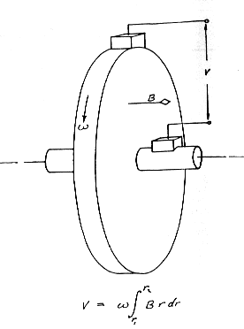
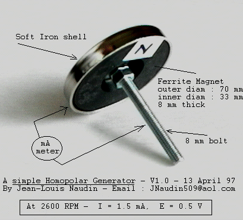

The Faraday Homopolar
Generator Experiment
by Jean-Louis Naudin - 13 April 1997
Easy to Build , Test it By Yourself (EBTBY)
Dear Experimenter,
I am glad to present you, a very simple experiment ( 5 minutes to build ) about the Faraday Homopolar Generator Experiment. With this experiment you can test by yourself, that the centrifugal extraction from the inertial field of space is possible, that was first demonstrated by Faraday in 1831.
In 1978 in Santa Barbara, California, a large electromagnetically excited N machine/SPG was constructed, the "Sunburst" machine. This machine was independently tested by Dr. Robert Kincheloe, Professor Emeritus of Electrical Engineering at Stanford University
The abstract of this report quotes:
"Known for over 150 years, the Faraday homopolar generator has been claimed to provide a basis for so-called "free energy" generation, in that under certain conditions the extraction of electrical output energy is not reflected as a corresponding mechanical load to the driving source."
"In the fall of 1831 when Michael Faraday performed the initial experiments which resulted in the discovery of the first dynamo, he also described a phenomenon which has yet to be understood in terms of conventional electrical theory.
In paragraphs 255, 256, and 257 of his diary (fig. 2, ref. 1), dated December 26, 1831, is described the experiment of cementing a copper disc on top of a cylinder magnet, paper intervening, and supporting the magnet by means of a string so as to rotate axially, with the wires of a galvanometer connected to the edge and axis of the copper plate."
Doc ref : "On the possibility of extraction of electrical energy directly from space" by: Bruce DePalma

A SIMPLE EXPERIMENT (EBTBY):

This is not a power supply for your home, but this experiment is only to prove that the Faraday homopolar generator principle is working, and you can test it by yourself.
What you need :
- A magnetic socket for CB antenna, ( you must check if the magnetisation is on axis, one pole on each side )
( I have used a CB antenna ref : IMPEX 306 300 )
- an electric drill,
- one 8x80 mm bolt and nuts.
- an electronic multimeter
Experiment :
a) Extract the magnet from the socket antenna, don't dismount the soft iron shell,
b) Screw the 8mm bolt with nuts on the magnet axis,
c) Put the axis of the apparatus on the electric drill. The drill must be fixed on an adapted support..
TESTS and RESULTS
I have mesured, between the shaft and the rim ( rotation speed = 2600 RPM ):
- a current of 1.5 mA
- a voltage without load E=0.5V
Possible improvements
- You can stack more magnet's sockets in parallel,
- you can replace the soft iron with a copper shell,
- you can use good carbon brushes, or mercury contacts,
Some comments :
William J. Beaty has said : http://www.eskimo.com/~billb/freenrg/n-mach.html
" It appears that the rotation of Faraday's disk generates current but rotation of his bar magnet does not. In reality the only important motion is *relative* movement between Faraday's disk and his external circuit, and the rotation of the magnet is unimportant. Of course the magnetic field is necessary to accomplish the effect, but it's relative rotation only creates net radial charge separation without creating current. Once the external circuit is recognized to be the "stator" of the device, the homopolar generator is not as weird as it first seems."
________________
To learn more about :
Return to the JLN Labs home page